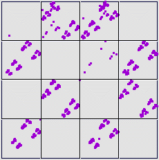
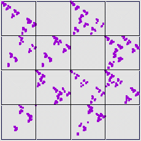

11. Here are the driven IFS plots for 2000 iterates of the
|  |  |
| The most straightforward approach is to compare the occupied length 2 addresses, noting the differences. |
| The equal size plot has points in addresses 34 and 41, empty in the equal weight plot. |
| The equal weight plot has points in the addresses 23, 32, and 33, empty in the equal size plot. |
| The lone equal size 33 point is a puzzle. It comes from a point in 31, which came from a point in 11. |
| So it is unlikely this is initial transient behavior. Does it represent a particularly unlikely, but not forbidden, combination? For now, we ignore this point. |
| With equal size bins we see no transitions |
| From Address Stats we know eual size bins 1 and 4 contain more data points than bins 2 and 3. |
| So the conversion to equal weight bins increases the number of data points in those, at least in part by incresaing the numerical range of bins 2 and 3 at the expense of 1 and 2. |
| This also can explain why |
(Note that generating 4000 points instead of 2000, the equal size bin driven IFS has seven points with address 33. So this combination is unlikely, but not impossible.)
Return to Exercises.